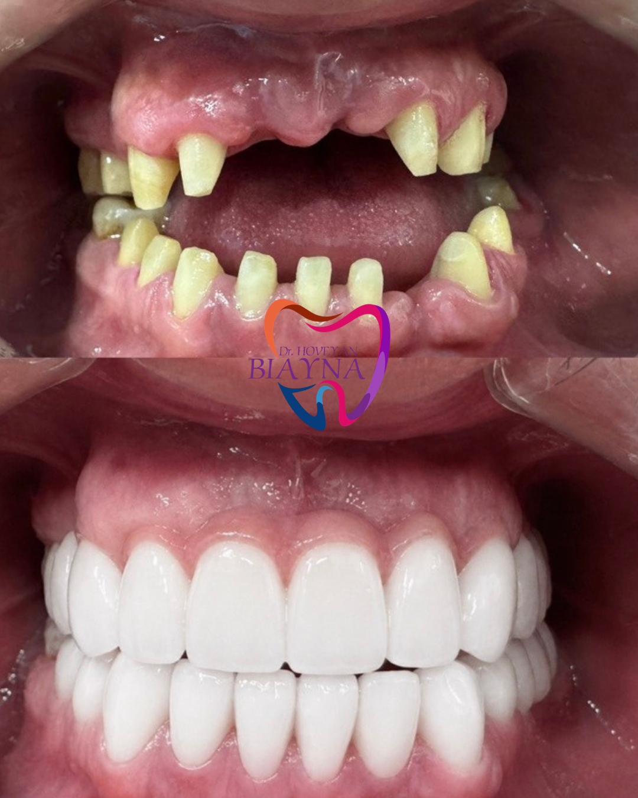
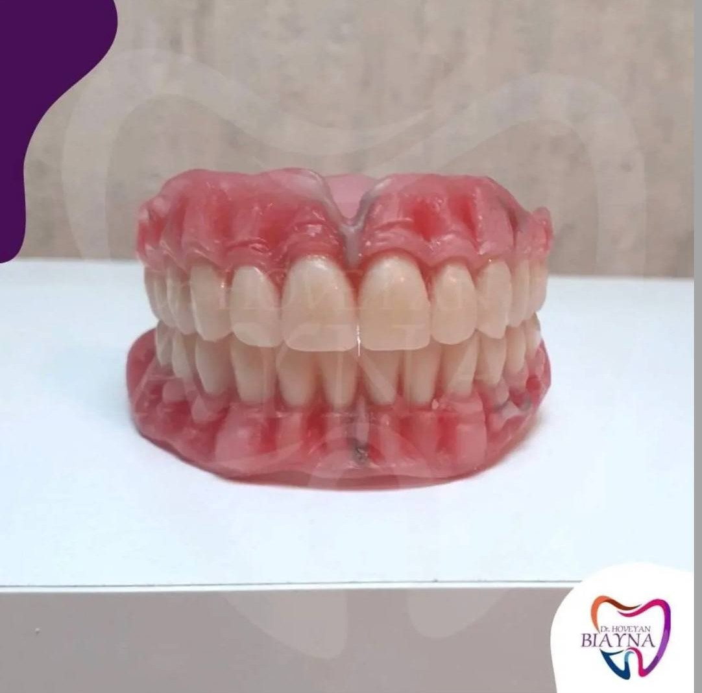
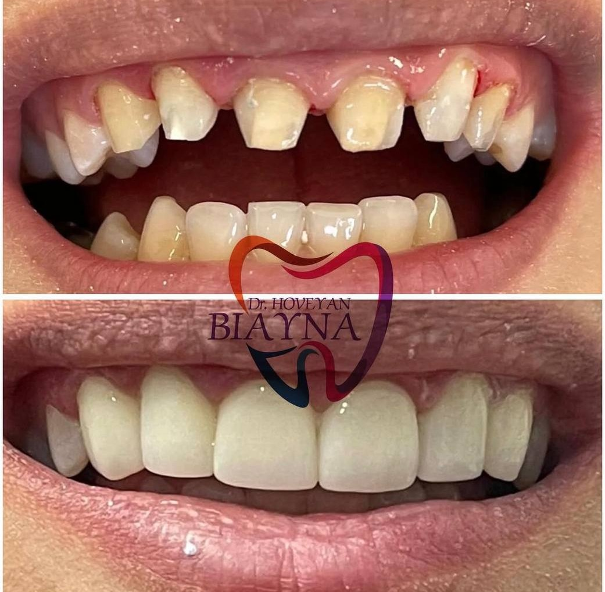

Փորձագիտական օգնություն Մխիթար Հերացու անվան ԵՊԲՀ դասախոսից
Գրանցվել ընդունելությանBiayna Hoveyan — բարձրակարգ ստոմատոլոգ՝ բազմամյա աշխատանքային փորձով։ Մխիթար Հերացու անվան Երևանի պետական բժշկական համալսարանի դասախոս։
Մենք առաջարկում ենք բուժման փորձագիտական մոտեցում, որը հիմնված է ժամանակակից բժշկական արձանագրությունների և յուրաքանչյուր հիվանդի առողջության հանդեպ հոգատարության վրա։
Բուժման պրոֆեսիոնալ պլանավորում
Կարիեսի բուժում
Ատամնաքարերի և ատամնափառերի մաքրում
Պարոդոնտի հիվանդությունների բուժում
Պուլպիտի բուժում
Պերիոդօնտիտների բուժում
Ատամնային վինիրներ
Zirkon կերամիկական պսակներ
Մետաղ կերամիկական պսակներ
Մասնակի կամ լրիվ շարժական պրոթեզներ
Բյուգելային պրոթեզներ
իմպլանտների տեղադրում և պսակների
Ժամանակավոր պսակներ CAD-CAM
Երաշխավորում ենք բուժման բարձր որակը:
Կիրառում ենք ժամանակակից անզգայացնող միջոցներ:
Ավելի քան 20 տարվա հաջող պրակտիկա:
"Շատ էի վախենում ատամնաբույժից, բայց այստեղ ամեն ինչ անցավ առավելագույնս հարմարավետ և առանց ցավի։ Մեծ շնորհակալություն պրոֆեսիոնալիզմի համար:"
— Աննա Մ."Հաճելի մթնոլորտ, մաքրություն և ուշադիր վերաբերմունք։ Այժմ ամբողջ ընտանիքով բուժվում ենք միայն այստեղ։"
— Արմեն Ս.


Գրանցվեք խորհրդատվության հենց հիմա՝
Գրել WhatsApp-ովՀասցե՝ ք. Երևան, Մեսրոպ Մաշտոցի պողոտա, 35